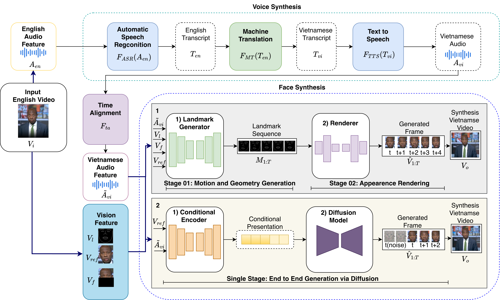

Mẫu 01
Hôm nay chúng ta đánh giá chất lượng tổng hợp giọng nói tiếng Việt bằng nhiều mô hình khác nhau.
MMS-TTS
VoxCPM2
Qualitative Demo · Research Thesis
ASR - Machine Translation - TTS - Face Synthesis

10 mẫu LibriSpeech test-clean.
| ID | Label | Whisper Tiny | Whisper Base | Whisper Large v3 | Hojo ASR V1 | NVIDIA Canary 1B |
|---|---|---|---|---|---|---|
| test-clean_00007 | YOU WILL BE FRANK WITH ME I ALWAYS AM | You will be frank with me. I always am | You will be frank with me. I always am. | You will be frank with me? I always am. | you will be frank with me i always am | You will be frank with me? I always am. |
| test-clean_00474 | IT IS NECESSARY THEREFORE THAT HE SHOULD COMPLY THE KING FROWNED | It is necessary, therefore, that he should comply. The king frowned. | It is necessary, therefore, that he should comply. The king frowned. | It is necessary, therefore, that he should comply. The king frowned. | it is necessary therefore that he should comply the king frowned | It is necessary, therefore, that he should comply. The King frowned, |
| test-clean_00885 | OUR FIRST IMPRESSIONS OF PEOPLE ARE IN NINE CASES OUT OF TEN THE RIGHT IMPRESSIONS | Our first impressions of people are, in nine cases out of 10, the right impressions. | Our first impressions of people are, in nine cases out of ten, the right impressions. | Our first impressions of people are, in nine cases out of ten, the right impressions. | our first impressions of people are in nine cases out of ten the right impressions | Our first impressions of people are, in nine cases out of ten, the right impressions. |
6 câu FLORES-200 chung cho mọi model.
| ID | English source | Label tiếng Việt | MarianMT / OPUS | mBART-50 | M2M-100 | NLLB-600M |
|---|---|---|---|---|---|---|
| flores200_devtest_1 | “We now have 4-month-old mice that are non-diabetic that used to be diabetic,” he added. | “Chúng tôi hiện có đàn chuột 4 tháng tuổi đã hết bị tiểu đường,” ông nói thêm. | “Bây giờ chúng tôi đã có bốn tháng tuổi không phải là lưỡng tính mà đã từng được sử dụng để bị mắc nợ,” ông nói thêm. | “Bây giờ chúng tôi có những con chuột 4 tháng tuổi không mắc bệnh tiểu đường mà đã từng mắc bệnh tiểu đường,” ông ấy thêm vào. | “Bây giờ chúng tôi có những con chuột 4 tháng tuổi không mắc bệnh tiểu đường và thường mắc bệnh tiểu đường”, ông nói thêm. | Ông nói thêm: “Bây giờ chúng tôi có chuột 4 tháng tuổi không mắc bệnh tiểu đường, trước đây đã mắc bệnh tiểu đường”. |
| flores200_devtest_6 | Previously, Ring's CEO, Jamie Siminoff, remarked the company started when his doorbell wasn't audible from his shop in his garage. | Trước đây, giám đốc điều hành của Ring, Jamie Siminoff, đã phát biểu rằng công ty ra đời khi ông không nghe tiếng chuông cửa khi đang ở trong gara. | Trước đó, tập trước của tập đoàn, là tập trước của tập đoàn, Jo Siminoff, đã kể lại công ty đã bắt đầu từ khi tiếng hát của ông không phải là từ cửa hàng của mình trong garage của mình. | Trước đó, CEO của Ring, Jamie Siminoff, đã chỉ ra rằng công ty bắt đầu khi chiếc chuông cửa của Ring không được nghe thấy từ cửa hàng của anh ta trong gara của anh ta. | Trước đó, Giám đốc điều hành của Ring, Jamie Siminoff, lưu ý rằng công ty bắt đầu khi cửa sổ của ông không được nghe từ cửa hàng của ông trong nhà ga. | Trước đó, Giám đốc điều hành của Ring, Jamie Siminoff, nhận xét công ty bắt đầu khi chuông cửa của anh ta không được nghe thấy từ cửa hàng của anh ta trong garaj của anh ta. |
| flores200_devtest_7 | He built a WiFi door bell, he said. | Ông đã lắp một chuông cửa WiFi, ông cho biết. | Ông ấy đã xây một chuông cửa bằng dây điện, ông ấy nói vậy. | Anh ấy đã xây một chiếc chuông cửa WiFi, anh ấy nói. | Ông đã xây dựng một chiếc điện thoại cửa WiFi, ông nói. | Ông ấy nói ông ấy đã xây một cái chuông cửa WiFi. |
| flores200_devtest_8 | Siminoff said sales boosted after his 2013 appearance in a Shark Tank episode where the show panel declined funding the startup. | Siminoff cho biết doanh số tăng sau sự xuất hiện của mình vào năm 2013 trong một tập Shark Tank khi hội đồng giám khảo chương trình đã từ chối tài trợ cho công ty khởi nghiệp. | Sibinoff nói tăng cường sau khi anh ta xuất hiện năm 2013 trong một giai đoạn xe tăng mà chương trình từ chối tài trợ. | Siminoff nói rằng doanh thu tăng lên sau khi ông xuất hiện vào năm 2013 trong một tập phim Shark Tank, trong đó ban giám đốc chương trình từ chối tài trợ cho công ty khởi nghiệp. | Siminoff cho biết doanh số đã tăng lên sau khi ông xuất hiện vào năm 2013 trong một tập phim Shark Tank, nơi các chương trình đã từ chối tài trợ cho công ty khởi nghiệp. | Siminoff cho biết doanh số đã tăng lên sau khi xuất hiện năm 2013 trong một tập Shark Tank nơi bảng điều khiển chương trình từ chối tài trợ cho khởi nghiệp. |
| flores200_devtest_9 | In late 2017, Siminoff appeared on shopping television channel QVC. | Vào cuối năm 2017, Siminoff xuất hiện trên kênh truyền hình mua sắm QVC. | Vào cuối năm 20, Siminoff xuất hiện trên kênh truyền hình truyền hình truyền hình QV. | Vào cuối năm 2017, Siminoff xuất hiện trên kênh truyền hình mua sắm QVC. | Vào cuối năm 2017, Siminoff xuất hiện trên kênh truyền hình mua sắm QVC. | Vào cuối năm 2017, Siminoff xuất hiện trên kênh truyền hình mua sắm QVC. |
| flores200_devtest_10 | Ring also settled a lawsuit with competing security company, the ADT Corporation. | Ring cũng đã dàn xếp một vụ kiện với một công ty an ninh đối thủ là ADT Corporation. | Họ cũng đã dàn xếp một vụ kiện với công ty an ninh quốc gia, tổ chức Liên đoàn An ninh Quốc gia. | Ring cũng đã giải quyết một vụ kiện với công ty an ninh cạnh tranh, ADT Corporation. | Ring cũng giải quyết một vụ kiện với công ty an ninh cạnh tranh, công ty ADT. | Ring cũng giải quyết một vụ kiện với công ty bảo mật cạnh tranh, ADT Corporation. |
| ID | English source | Label tiếng Việt | Gemini 3.8 Flash | DeepSeek Chat | Qwen 2.5 1.5B |
|---|---|---|---|---|---|
| flores200_devtest_1 | “We now have 4-month-old mice that are non-diabetic that used to be diabetic,” he added. | “Chúng tôi hiện có đàn chuột 4 tháng tuổi đã hết bị tiểu đường,” ông nói thêm. | Đang tạo lại bằng Gemini 3.8 Flash. | Ông nói thêm: “Giờ chúng tôi có những con chuột 4 tháng tuổi không còn bị tiểu đường, dù trước đó chúng từng mắc bệnh này.” | Chúng tôi hiện có chuột non 4 tháng tuổi không bị糖尿病 mà trước đây là diabetes. |
| flores200_devtest_6 | Previously, Ring's CEO, Jamie Siminoff, remarked the company started when his doorbell wasn't audible from his shop in his garage. | Trước đây, giám đốc điều hành của Ring, Jamie Siminoff, đã phát biểu rằng công ty ra đời khi ông không nghe tiếng chuông cửa khi đang ở trong gara. | Đang tạo lại bằng Gemini 3.8 Flash. | Trước đây, CEO của Ring, Jamie Siminoff, từng chia sẻ rằng công ty khởi nghiệp khi chuông cửa nhà ông không nghe được từ cửa hàng trong gara. | Trước đó, Giám đốc điều hành Ring, Jamie Siminoff, đã nói rằng công ty bắt đầu khi cửa hàng của ông không thể nghe thấy từ nhà kho của mình. |
| flores200_devtest_7 | He built a WiFi door bell, he said. | Ông đã lắp một chuông cửa WiFi, ông cho biết. | Đang tạo lại bằng Gemini 3.8 Flash. | Anh ấy nói anh ấy đã làm một chiếc chuông cửa WiFi. | Anh đã xây dựng một cửa hàng có wifi, anh nói. |
| flores200_devtest_8 | Siminoff said sales boosted after his 2013 appearance in a Shark Tank episode where the show panel declined funding the startup. | Siminoff cho biết doanh số tăng sau sự xuất hiện của mình vào năm 2013 trong một tập Shark Tank khi hội đồng giám khảo chương trình đã từ chối tài trợ cho công ty khởi nghiệp. | Đang tạo lại bằng Gemini 3.8 Flash. | Siminoff cho biết doanh số tăng vọt sau khi anh xuất hiện trong tập Shark Tank năm 2013, nơi ban giám khảo từ chối đầu tư vào startup của anh. | Siminoff nói doanh thu tăng sau khi xuất hiện trong một tập của Shark Tank vào năm 2013, khi ban giám khảo chương trình từ chối tài trợ cho công ty khởi nghiệp. |
| flores200_devtest_9 | In late 2017, Siminoff appeared on shopping television channel QVC. | Vào cuối năm 2017, Siminoff xuất hiện trên kênh truyền hình mua sắm QVC. | Đang tạo lại bằng Gemini 3.8 Flash. | Cuối năm 2017, Siminoff xuất hiện trên kênh truyền hình mua sắm QVC. | Trong cuối năm 2017, Siminoff xuất hiện trên kênh truyền hình mua sắm QVC. |
| flores200_devtest_10 | Ring also settled a lawsuit with competing security company, the ADT Corporation. | Ring cũng đã dàn xếp một vụ kiện với một công ty an ninh đối thủ là ADT Corporation. | Đang tạo lại bằng Gemini 3.8 Flash. | Ring cũng đã giải quyết một vụ kiện với công ty an ninh đối thủ, Tập đoàn ADT. | Riêng cũng đã giải quyết một vụ kiện với công ty bảo vệ khác là Công ty ADT. |
5 mẫu tiếng Việt.
| Model | Backend | Số câu | Mean MOS proxy | Mean RTF | Mean sim_proxy |
|---|---|---|---|---|---|
| MMS-TTS | Transformers / VITS | 5 | 4.864 | 0.385 | 0.954 |
| VoxCPM2 Clone | VoxCPM2 | 5 | 4.880 | 6.195 | 0.991 |
Hôm nay chúng ta đánh giá chất lượng tổng hợp giọng nói tiếng Việt bằng nhiều mô hình khác nhau.
Một hệ thống tốt cần phát âm rõ ràng, giữ đúng nội dung và có nhịp đọc phù hợp với video gốc.
Các chỉ số định lượng giúp so sánh tốc độ, độ chính xác nội dung và mức độ giống giọng tham chiếu.
Dữ liệu thử nghiệm được giữ nhất quán để kết quả có thể kiểm tra và tái lập.
Bản dịch tự nhiên giúp người xem theo dõi nội dung video dễ dàng hơn.
So sánh thực nghiệm từng model.
End-to-End Pipeline.
vt_schools
Output end-to-end
Output end-to-end
bbc_beach
Output end-to-end
Output end-to-end
bbc_odesa
Output end-to-end
Output end-to-end